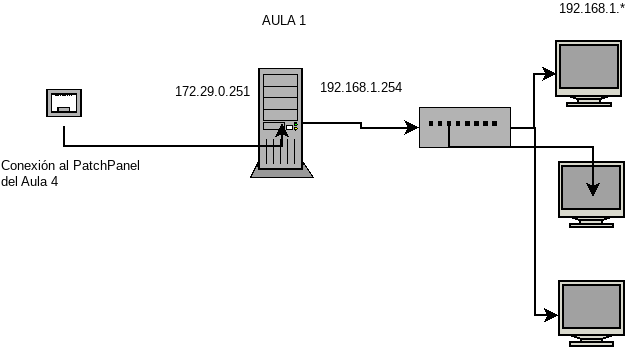
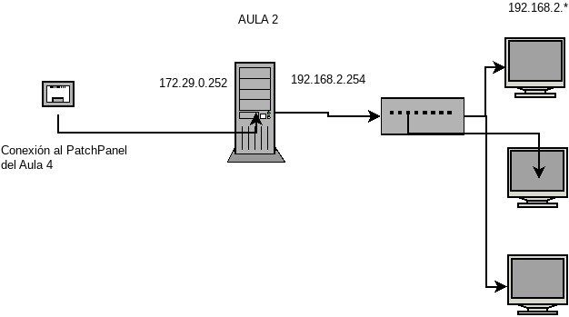
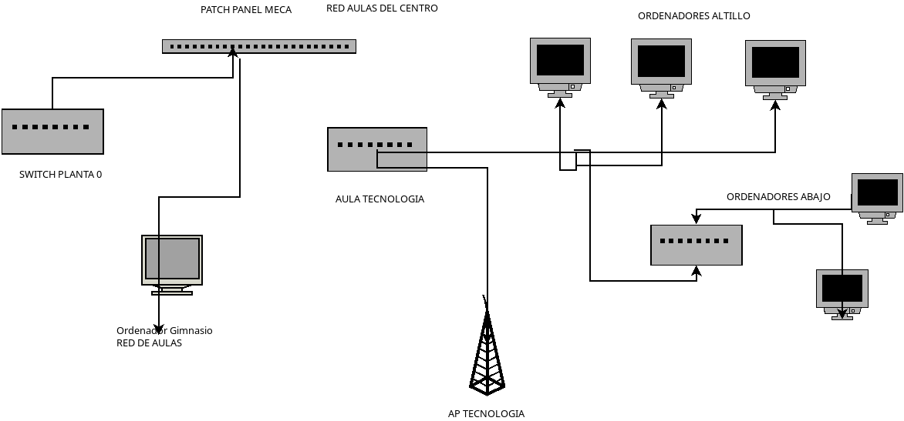
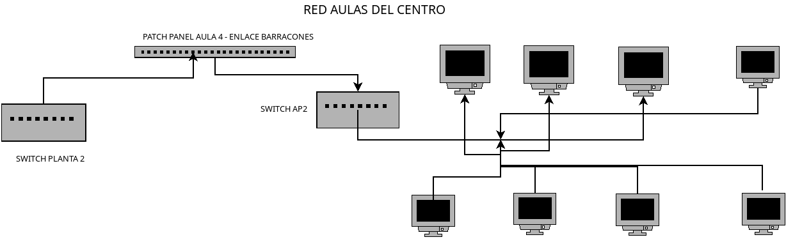

Descripción de la red.
La red del centro es 172.29.0.0/23
No todas las direcciones IP estan asignadas en DHCP
- 172.29.0.[1-254] - IPs estáticas
- 172.29.1.[1-254] - IPs dinámicas
Puerta de enlace: 172.29.0.1
DNS : 8.8.8.8 y 8.8.4.4 -> Qué están proxificados y que resuelven a :
Puertos no proxificados en Macrolan:
Topología
Básica
 Red Básica
Red Básica
Cableado estructurado
 Red - Cableado
Red - Cableado
Red Wifi
Se utilizan 4 puntos de acceso Unifi para la gestión de la WiFi, se hace relay del DHCP del Teldat,
luego las direcciones IP que asignan son: 172.29.1.*.
Aulas de Ciclos
Una única red:
192.168.4.0/24
Servidor Aula 4
IP: 192.168.4.254
Servicios
-
DHCP y Enrutamiento PCs aulas 3 y 4
-
Gestor de los Unifi de la WiFi
- Repositorio de cosas para los ciclos
- Nagios
- OCS Inventory
Se encuentra en las dos redes con las IPs 172.29.0.254 y 192.168.4.254
Sistema Operativo
Ubuntu 16.04
Equipos Aula 3
Dotación de consellería, inventariados
Software
SO: KDE Neon - 18.04 (bionic)
Usuarios smx y daw - pass (smx3 y daw3)
SSH instalado pero controlado para el usuario tic
/home esta aparte
TODO
- Coincidir IP con nombre
- Revisar Software para AOF y Redes
Equipos Aula 4
Dotación de consellería, inventariados
Software
SO: KDE Neon - 18.04 (bionic)
Usuarios smx y daw - pass (smx4 y daw4)
SSH instalado pero controlado para el usuario tic
/home esta aparte
TODO
- Coincidir IP con nombre
- Falta 1 equipo
- Rosetas del medio por arreglar
- Revisar Rango DHCP del server para SOX y SER
Aulas de Informática - ESO
Dos redes independientes, cada servidor de aula está en un rango, se ven por la tarjeta de red de fuera.
Todos los ordenadores del aula están conectados a un switch que conecta al servidor con los clientes.
Equipos Aula 1

Aula 1
Dotación de consellería, inventariados
Software
SO: LliureX 19 - Ubuntu 18.04 (bionic)
Usuarios alumno, profe, tic
Servidor aula 1
- IP - aula : 192.168.1.254
- IP - red centro : 172.29.0.251
- Da servicios de RED AL AULA, posibles bucles
TODO
- Coincidir IP con nombre
- Usuarios LDAP
- Reinstalar el servidor LliureX 19
Equipos Aula 2

Aula 2
Dotación de consellería, inventariados
Software
SO: LliureX 19 - Ubuntu 18.04 (bionic)
Usuarios alumno, profe, tic
Servidor aula 2
- IP - aula : 192.168.2.254
- IP - red centro : 172.29.0.252
- Da servicios de RED AL AULA, posibles bucles
TODO
- Coincidir IP con nombre
- Usuarios LDAP
- Instalar los clientes LliureX 19
Aula MECA
Cuenta con un SWITCH MikroTik que hace de Router, se comporta como un aula LliureX, pero sin el servidor
 Aulas MECA y TECNO
Aulas MECA y TECNO
Equipos MECA
Dotación de ciclos de Consellería
Las horas de mantenimiento las tienen administración.
Puntualmente tiene incidencias, pero no muchas (que nos lleguen).
Software
- SO: Windows 10
- LibreOffice
- Suite del SOL (ContaSOL, factuSOL, ...)
- Un programa de mecanografia viejísimo
TODO
- Instalar un control de AULA en esos ordenadores
- Este Software Puede ser una alternativa Veyon.io
- Sacarle más provecho al MikroTik
AULA TECNO
No es un aula, son equipos que han ido aprovechando de restos para no tener que subir a las aulas de
Informática
Se encuentran en la red de aulas y su conexión con el SWITCH de la Planta 0 está en en el armario de MECA
El ordenador del Gimnasio también tiene su conexión con la red de aulas en el Patch panel de MECA
El motivo de todo esto es la Infraestructura del centro mismo a nivel arquitectónico.
Cuentan con un AP situado en la pared más cercana al gimnasio. Al cual llegan a través de un pequeño
switch.
Tienen una instalación DUAL Windows/LinuX.

Aula TECNO
TODO
- Instalar el Armario de comunicaciones
- Patchear la pared
- Actualizar los equipos
- Crear una imagen de la instalación para restaurar
- Revisar cables y equipos.
- Inventariar de forma correcta los equipos.
- Eliminar el switch del AP y realizar una instalación mejor del AP.
Aula Múltiple
Todo por instalar
TODO
- Instalar los equipos, utilizaremos los que queden libres de igualar el aula 1 de Informática
- Inventariarlos
- Instalar el Software Necesario para Inglés y Tecnlogía.
Televisión
Cuenta con una raspberry preparada para estar en marcha y proyectar vídeos de la revista.
O de lo que se requiera.
TODO
- Instalar la raspberry y configurarla.
- Comprobar que el programa que genera vídeos a partir de páginas Web sigue funcionando.
- Establecer un mecanismo de publicación (montaje NFS).
Servidor Impresión
Oliplus tiene un servidor que da servicio a las diferentes impresoras con los usuarios que les damos.
Usan un LDAP y podrían usar el del modelo de centro si lo pusieramos.
El servidor está en la sala de comunicaciones (Detras biblioteca).
- IP OWNCLOUD : 172.29.0.245
- IP ControlImpresion : 172.29.0.240
- 241-244 estan reservadas para ellos (MV)
Sala Profes e Impresión
Tienen la carpeta de Intranet compartida desde el servidor de AULA 4 por NFS en solo lectura.
4 Ordenadores de la red de aulas con las IPs:
- 172.29.0.16
- 172.29.0.17
- 172.29.0.18
- 172.29.0.19
- 172.29.0.20
- 172.29.0.21
TODO
- Revisar la copia de seguridad del documento de los baños.
- ¿Programa de Faltas?
Conserjeria
Se trata del ordenador que mediante un cron hace sonar la alarma de los patios.
IP : 172.29.0.49
TODO
-
Instalar la RaspBerry PI nueva e instalarla en el armario de conserjeria conectada a los altavoces.
-
Hacer copia de seguridad de todo el /home/
Aulas PISO 1
El armario de comunicacion está en el departamento de idiomas y tiene el SWITCH de la planta 1.
Todos los ordenadores deben estar en la red de aulas.
Los ordenadores de los departamentos también.
TODO
-
Instalar los libros de Inglés allá donde corresponda.
-
Comprobar que todos los ordenadores son iguales.
Orientación
Ordenador + Telefono IP en la red de Secretaria
TODO
-
Comprobar que IP tiene e inventariarlo
Aula PT
No es un aula propiamente dicha, se trata de los restos de otras aulas de Informática.
TODO
-
Comprobar que IP tienen.
-
Actualizar a LliureX cuando sea posible (no urge)
Aulas PISO 2
El armario de comunicacion está en el Aula 4 de Informática.
Todos los ordenadores deben estar en la red de aulas.
Los ordenadores de los departamentos también.
TODO
-
Instalar los libros de Inglés allá donde corresponda.
-
Comprobar que todos los ordenadores son iguales.
Aulas Prefabricadas
El armario de comunicacion está en el AP 2 -> viene del SWITCH del Aula 4 de Informática.
Todos los ordenadores deben estar en la red de aulas.
Hay dos modelos de ordenadores
En las aulas hay dos puntos de red, solo se están usando los pares

Diagrama Aulas Prefabricadas
TODO
- Instalar los libros de Inglés allá donde corresponda.
- Comprobar que todos los ordenadores son iguales.
- Comprobar los patch panel para que todos sean iguales.
- Comprobar que los AP2,AP3 y AP4 estén operativos
- Instalar Lectores de DVD en todos los equipos poco a poco con los alumnos de SMX
- Arreglar fuente de alimentación
TODO GENERAL
- Instalar el LDAP en un servidor que no sea ni S-aula1 ni S-aula2, de tal manera que no se apague.
- Revisar el listado de IPs.
- Actualizar todos los equipos (Recurrente).
- Login uníco en la Senia.
- Sincronizar todo el inventario con el Inventario TIC de la consellería.
- Dejarlo todo etiquetado antes de febrero.